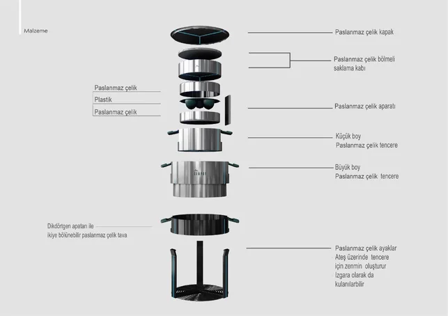
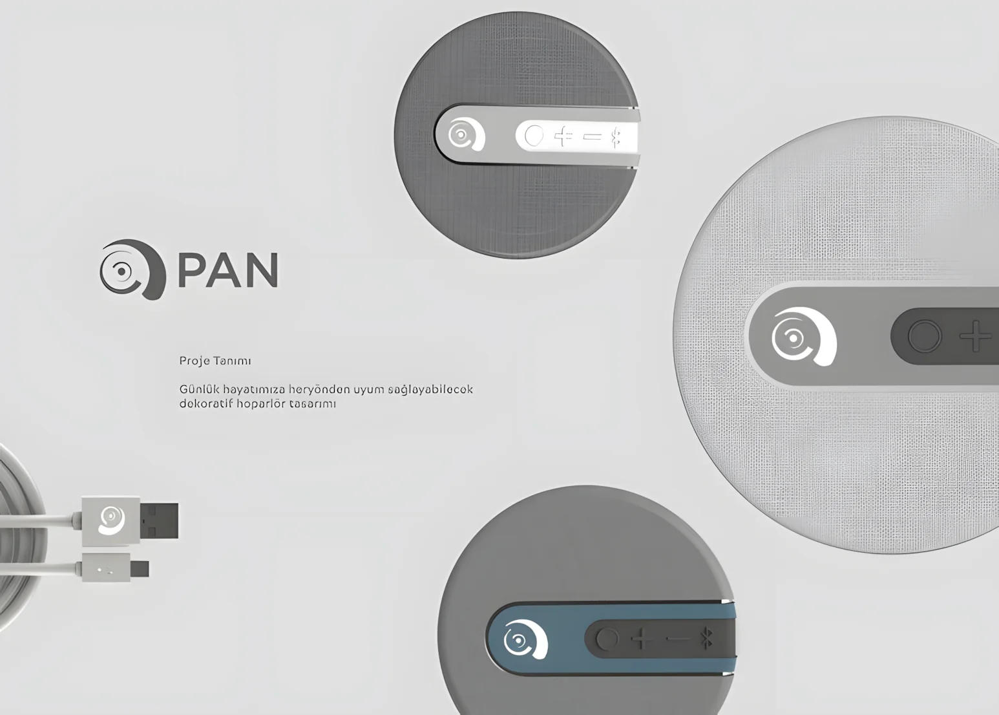
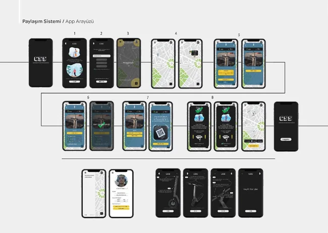

Ürün Tasarımı
Konsept, form araştırması, parça tasarımı ve ürün geliştirme.
Endüstriyel Tasarım Portfolyosu
Konsept geliştirme, 3D modelleme, render, teknik çizim, ürün görselleştirme ve üretime hazırlık süreçlerine odaklanan endüstriyel tasarımcı.




Hakkında
Endüstriyel tasarım ve ürün geliştirme alanında çalışıyorum. Ürün fikrinden 3D modelleme, render, teknik çizim ve üretime hazırlık süreçlerine kadar tasarımın farklı aşamalarında yer alıyorum. Tasarım sürecinde formun yanında kullanım, malzeme, ergonomi ve üretilebilirlik gibi detayları da önemsiyorum.
Konsept, form araştırması, parça tasarımı ve ürün geliştirme.
Fusion 360, Autodesk Alias ve ürün detaylandırma süreçleri.
KeyShot render, ürün sunumu ve görsel iletişim materyalleri.
Projeler
01
Kompakt ürün konsepti için form araştırması, kullanım senaryosu, 3D modelleme, patlatılmış görünüm ve ürün sunum sayfaları.
02
Ürün formu, ölçülendirme, teknik çizim, render ve kullanım bağlamını bir araya getiren endüstriyel tasarım çalışması.
03
Mikro mobilite odağında parça çözümü, ürün detaylandırma, teknik sunum ve dijital ürün anlatımı.
04
Ürün fikrini eskiz, form geliştirme, render ve sunum diliyle anlatan konsept ürün çalışması.
05
Farklı ürün fikirleri için hızlı eskiz, form denemesi, oran araştırması ve görsel düşünme çalışmaları.
Süreç
Kullanıcı ihtiyacı, kullanım senaryosu, form dili ve ürün bağlamı üzerine çalışma.
Ürün formunu ve parçalarını detaylandırarak sunuma ve üretime hazırlama.
KeyShot render, ürün hikayesi, teknik anlatım ve portfolyo sunum sayfaları.
Teknik çizim, ölçülendirme, kullanım kılavuzu ve ürün iletişimi çıktıları.
İletişim